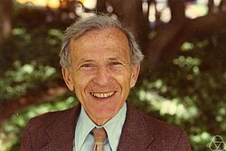

Hans Lewy | |
|---|---|
 Hans Lewy in 1975 (photo by George Bergman) | |
| Born | October 20, 1904 |
| Died | August 23, 1988 (aged 83) |
| Alma mater | University of Göttingen |
| Known for | Courant–Friedrichs–Lewy condition, Lewy's example |
| Awards | Wolf Prize (1986)[1] |
| Scientific career | |
| Fields | Mathematical analysis, partial differential equations, Function of several complex variables |
| Richard Courant[2] | |
Doctoral students | David Kinderlehrer |
{kind=link}
Hans Lewy (20 October 1904 – 23 August 1988) was an American mathematician, known for his work on partial differential equations and on the theory of functions of several complex variables.[3]
Life
Lewy was born to a Jewish family in Breslau, Silesia, on October 20, 1904. He began his studies at the University of Göttingen in 1922, after being advised to avoid the more local University of Breslau because it was too old-fashioned,[4][5] supporting himself during the Weimar hyperinflation by a side job doing railroad track maintenance.[5] At Göttingen, he studied both mathematics and physics; his teachers there included Max Born, Richard Courant, James Franck, David Hilbert, Edmund Landau, Emmy Noether, and Alexander Ostrowski. He earned his doctorate in 1926, at which time he and his friend Kurt Otto Friedrichs both became assistants to Courant and privatdozents at Göttingen. The famous Courant-Friedrichs-Lewy condition originated from that time in 1928.[4][5]
At the recommendation of Courant, Lewy was granted a Rockefeller Fellowship, which he used in 1929 to travel to Rome and study algebraic geometry with Tullio Levi-Civita and Federigo Enriques, and then in 1930 to travel to Paris, where he attended the seminar of Jacques Hadamard. After Hitler's election as chancellor in 1933, Lewy was advised by Herbert Busemann to leave Germany again. He was offered a position in Madrid, but declined it, fearing for the future there under Francisco Franco. He revisited Italy and France, but then at the invitation of the Emergency Committee in Aid of Displaced Foreign Scholars and with the assistance of Hadamard found a two-year position in America at Brown University. At the end of that term, in 1935, he moved to the University of California, Berkeley.[4][5]
During World War II, Lewy obtained a pilot's license, but then worked at the Aberdeen Proving Ground. He married Helen Crosby in 1947.[5]
In 1950, Lewy was fired from Berkeley for refusing to sign a loyalty oath.[5][6][7] He taught at Harvard University and Stanford University in 1952 and 1953[5] before being reinstated by the California Supreme Court case Tolman v. Underhill.[6][7]
He retired from Berkeley in 1972, and in 1973 became one of two Ordway Professors of Mathematics at the University of Minnesota. He died on August 23, 1988, in Berkeley.[5][6][8]
Lewy is known for his contributions to partial differential equations. In 1957, his famous example of a first-order linear partial differential operator, , with complex coefficients for which the equation has no local solutions unless is real analytic was so stunning and unexpected that it redirected the field of partial differential equations, as well as shaping modern analysis in a significant way.[9] Based on this example, Louis Nirenberg, Lars Hörmander, François Trèves, Nils Dencker, etc. developed a theory of local solvability for pseudo-differential equations.
He also worked on several complex variables in relation to nonlinear hyperbolic equations and elliptic equations, well-posedness for initial value problems of wave fronts (now commonly called Sobolev spaces) in the early 1930s, solutions of the classical problems of Hermann Weyl and Hermann Minkowski for analytical data (the original problem was solved by Louis Nirenberg in 1949 as part of his PhD thesis), the extendibility of minimal surfaces on and analytical nature of its boundaries which is fully free or in part, free boundary problems of water wave fronts in hydrodynamics, and the proof of quadratic reciprocity theorem in number theory from 'hydrodynamical' perspective.
Awards and honors
Lewy was elected to the National Academy of Sciences in 1964, and was also a member of the American Academy of Arts and Sciences.[6] He became a foreign member of the Accademia dei Lincei in 1972.[5] He was awarded a Leroy P. Steele Prize in 1979,[5] and a Wolf Prize in Mathematics in 1986 for his work on partial differential equations.[1] In 1986, the University of Bonn gave him an honorary doctorate.[8]
Publications
- Lewy, Hans (1935). "A priori limitations for Monge-Ampère equations". Transactions of the American Mathematical Society. 37: 417–434. doi:10.1090/s0002-9947-1935-1501794-9. MR 1501794.
- —— (1936). "On the non-vanishing of the Jacobian in certain one-to-one mappings". Bulletin of the American Mathematical Society. 42 (10): 689–692. doi:10.1090/s0002-9904-1936-06397-4. MR 1563404.
- —— (1936). "Generalized integrals and differential equations". Proceedings of the National Academy of Sciences of the United States of America. 22 (6): 377–381. Bibcode:1936PNAS...22..377L. doi:10.1073/pnas.22.6.377. PMC 1076784. PMID 16588088.
- —— (1937). "A priori limitations for Monge-Ampère equations. II". Transactions of the American Mathematical Society. 41: 365–374. doi:10.1090/s0002-9947-1937-1501906-9. MR 1501906.
- —— (1938). "On the existence of a closed convex surface realizing a given Riemannian metric". Proceedings of the National Academy of Sciences of the United States of America. 24 (2): 104–106. Bibcode:1938PNAS...24..104L. doi:10.1073/pnas.24.2.104. PMC 1077039. PMID 16588189.
- —— (1938). "Generalized integrals and differential equations". Transactions of the American Mathematical Society. 43 (3): 437–464. doi:10.1090/s0002-9947-1938-1501953-8. MR 1501953.
- —— (1938). "On differential geometry in the large. I. Minkowski's problem". Transactions of the American Mathematical Society. 43 (2): 258–270. doi:10.1090/s0002-9947-1938-1501942-3. MR 1501942.
- Lewy, Hans; Green, John Willie (1939). Aspects of the Calculus of Variations. Berkeley: University of California Press. hdl:2027/wu.89062910575; notes by J. W. Green from lectures by Hans Lewy, vi+96 pp.
{{cite book}}: CS1 maint: postscript (link)[10] - Lewy, Hans (1946). "Water waves on sloping beaches". Bulletin of the American Mathematical Society. 52 (9): 737–775. doi:10.1090/s0002-9904-1946-08643-7. MR 0022134.
- —— (1951). "On the boundary behavior of minimal surfaces". Proceedings of the National Academy of Sciences of the United States of America. 37 (2): 103–110. Bibcode:1951PNAS...37..103L. doi:10.1073/pnas.37.2.103. PMC 1063312. PMID 16578356.
- —— (1952). "A note on harmonic functions and a hydrodynamical application". Proceedings of the American Mathematical Society. 3: 111–113. doi:10.1090/s0002-9939-1952-0049399-9. MR 0049399.
- —— (1959). "On the reflection laws of second order differential equations in two independent variables". Bulletin of the American Mathematical Society. 65 (2): 37–58. doi:10.1090/s0002-9904-1959-10270-6. MR 0104048.
A selection of his work, edited by David Kinderlehrer and including his most important works, was published as the two volume work (Kinderlehrer 2002a) and (Kinderlehrer 2002b)
- Kinderlehrer, David, ed. (2002a), Hans Lewy Selecta. Volume 1, Contemporary Mathematicians, Boston-Basel-Stuttgart: Birkhäuser Verlag, pp. lxvi+357, ISBN 0-8176-3523-8, Zbl 1132.01312. With biographical essays by Helen Lewy and Constance Reid, and commentaries on Lewy's work by Erhard Heinz, Peter D. Lax, Jean Leray, Richard MacCamy, Louis Nirenberg and François Treves.
- Kinderlehrer, David, ed. (2002b), Hans Lewy Selecta. Volume 2, Contemporary Mathematicians, Boston-Basel-Stuttgart: Birkhäuser Verlag, pp. xviii, 446, ISBN 0-8176-3524-6, Zbl 1147.01335.
The following works are included in his "Selecta" in their original language or translated form.
- Courant, R.; Friedrichs, K.; Lewy, H. (1928), "Über die partiellen Differenzengleichungen der mathematischen Physik", Mathematische Annalen (in German), 100 (1): 32–74, Bibcode:1928MatAn.100...32C, doi:10.1007/BF01448839, JFM 54.0486.01, MR 1512478, S2CID 120760331. There are also two English translations of the 1928 German original paper: the first one is a translation from the German by Phyllis Fox, circulated as a research report: Courant, R.; Friedrichs, K.; Lewy, H. (September 1956) [1928], On the partial difference equations of mathematical physics, AEC Research and Development Report, vol. NYO-7689, New York: AEC Computing and Applied Mathematics Centre – Courant Institute of Mathematical Sciences, pp. V + 76, archived from the original on October 23, 2008. The second one is a typographical improvement of the first, published by IBM as: Courant, R.; Friedrichs, K.; Lewy, H. (March 1967) [1928], "On the partial difference equations of mathematical physics", IBM Journal of Research and Development, 11 (2): 215–234, Bibcode:1967IBMJ...11..215C, doi:10.1147/rd.112.0215, MR 0213764, Zbl 0145.40402, archived from the original on 2017-01-25, retrieved 2011-07-26. A freely downloadable version of this one can be found here
- Lewy, Hans (1957), "An example of a smooth linear partial differential equation without solution", Annals of Mathematics, 66 (1): 155–158, doi:10.2307/1970121, JSTOR 1970121, MR 0088629, Zbl 0078.08104.
- Lewy, Hans (1977), On the boundary behavior of holomorphic mappings (Lezione tenuta il 3 maggio 1976) (Lecture given on May 3, 1976), Contributi del Centro Linceo Interdisciplinare di Scienze Matematiche e Loro Applicazioni, vol. 35, Rome: Accademia Nazionale dei Lincei, p. 8.
See also
References
- ^ a b Wolf Foundation (2003), THE 1984/5 WOLF FOUNDATION PRIZE IN MATHEMATICS (in Hebrew), retrieved September 14, 2013.
- ^ Hans Lewy at the Mathematics Genealogy Project
- ^ Chern, Shiing-Shen; Hirzebruch, Friedrich, eds. (2001). ""Hans Lewy" prepared by S. Hildebrandt". Wolf Prize. Vol. 2. World Scientific. pp. 264–310. ISBN 9789812811769.
- ^ a b c Albers, Donald J.; Alexanderson, Gerald L.; Reid, Constance, eds. (1990), "Hans Lewy", More Mathematical People, Harcourt Brace Jovanovich, pp. 180–194.
- ^ a b c d e f g h i j Kinderlehrer, David (2002), "Hans Lewy. A brief biographical sketch", in Kinderlehrer, David (ed.), Hans Lewy Selecta. Volume 2, Contemporary Mathematicians, Boston-Basel-Stuttgart: Birkhäuser Verlag, ISBN 0-8176-3524-6.
- ^ a b c d "Dr. Hans Lewy, 83, Mathematics Professor", The New York Times, September 2, 1988
- ^ a b Sherri Chasin Calvo (2000), "Politics Impinges upon Mathematics", in Neil Schlager (ed.), Science and Its Times: Understanding the Social Significance of Scientific Discovery. Vol. VII: 1950 to present, Gale Group, pp. 242–244, ISBN 978-0-7876-3939-6.
- ^ a b Protter, M.; J. L., Kelley; Kato, T.; Lehmer, D. H. (1988), "Hans Lewy, Mathematics: Berkeley. 1904-1988 Professor Emeritus", in Krogh, David (ed.), 1988, University of California: In Memoriam, Berkeley, CA: University of California, Berkeley, pp. 85–87.
- ^ Lewy, Hans (July 1957). "An Example of a Smooth Linear Partial Differential Equation Without Solution". The Annals of Mathematics. 66 (1): 155. doi:10.2307/1970121.
- ^ Reid, W. T. (1940). "Review: Aspects of the Calculus of Variations, notes by J. W. Green from lectures by Hans Lewy". Bulletin of the American Mathematical Society. 46 (7): 595–596. doi:10.1090/s0002-9904-1940-07238-6.
External links
- The Bancroft Library (2009), Guide to the Hans Lewy Papers, vol. Collection number BANC MSS 91/147 cz, retrieved July 9, 2011.
- Dynkin, Eugene B. (October 7, 1981), Hans Lewy Interview October 7, 1981, Eugene B. Dynkin Collection of Mathematics Interviews, hdl:1813/17262. An audio interview, available at eCommons@Cornell from the [Eugene B. Dynkin Collection of Mathematics Interviews Eugene B. Dynkin Collection of Mathematics Interviews ].
- "Lewy ‹léevi›, Hans", Enciclopedia Treccani (in Italian), 2008, retrieved July 26, 2011. The biographical entry about Hans Lewy at the Enciclopedia Treccani.
- O'Connor, John J.; Robertson, Edmund F., "Hans Lewy", MacTutor History of Mathematics Archive, University of St Andrews